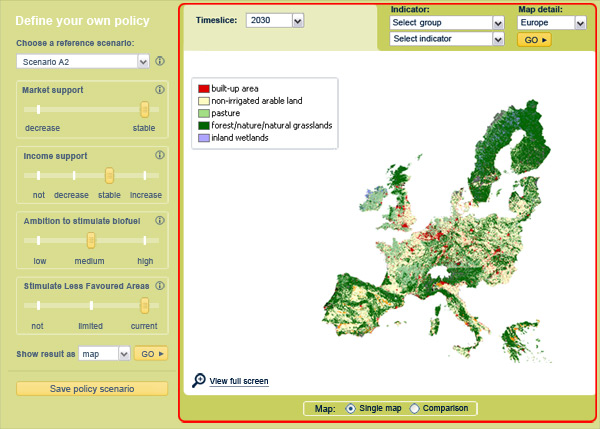

The Eururalis tool enables you to explore the future of Europe. The tool starts
from the four contrasting scenarios. You can compose your preferred policy scenario
by choosing one of the contrasting reference scenarios and adapt this base scenario
by adjusting the settings for the strategic policy options. The results of your
policy scenario will be provided to you in maps and graphs about People, Planet
and Profit issues and on Land-use for the next decades in 10 year time steps.
An integrated overview is presented in a so-called spider diagram. In this diagram
you will see the trade offs between different indicators. By interacting with
the policy options and the scenarios you will get an idea of the possible futures
of Europe and of impact of the policy options on reaching your desired future
Europe.
1. Choose a reference scenario
Either choose one of the four contrasting scenarios or choose a scenario that you already defined yourself. You can directly evaluate the results or adjust the policy options. With the i-button you can get additional information about the scenario.

2. Adjust strategic policy options
There are four policy options available. They are presented as slider bars with
two or more positions. You can adjust the policy button with the mouse and put
it on the desired position. If an option is not available it will be indicated
in grey and you cannot put the slider bar in that position. There is always one
policy option setting that is possible. The best and most logical way to put the
policy slider bars in position is to start at the top and work your way down.
When the policy options are in the desired position you have created your own scenario variant! You can store the results by pressing on 'save policy scenario' or you can press 'Go' and directly look at the results. In the pop-up menu you can indicate if you want to view the results in a spider diagram, or in maps.
3 Evaluate the results
The results can be presented in two ways: as maps or as a spider diagram. You are free to switch between these ways of presentation.
3a Map results evaluation
For each indicator the results will be presented in a map. You can choose in what
detail you want to see the map: square kilometer, regions or countries. You can
choose the time-slice to be shown in the map. You can also switch between indicators.
This is a two-step process: first you choose the domain of people, planet, profit
or land-use. Then you choose which indicator in the chosen domain you want to
see.
In order to be able to compare scenario variants, time slices etc., a map comparison option is available. This option shows the difference between two maps. This can be the difference between two time slices or the difference between two scenarios for the same or a different time slice. The options available for the single map option are also available for the map comparison option
Functions are available to navigate through the map.You can for instance zoom in to a desired region or 'hotspot' area with the magnifier glass (***icoon in tekst opnemen?) or you can pan the map with the small hand (***icoon in tekst opnemen

3b Spider diagram results evaluation
The spider diagram enables you to look at the results in an integrated way. You are able to see the results of more indicators in one graph. Results of various scenario variants, time-slices or regions can be compared in one graph.
The standard spider diagram has eight axes. Each axis represents one indicator. With the 'customize' option you are able to add or remove indicators.
In the spider diagram you can for instance present the results in three kinds
of series.
• series of time:
• series of regions
• series of scenarios
You can for instance present four time slices of one scenario. For this scenario you will be able to see how the different indicators develop over time. Some might develop in a desirable and others in an undesirable direction.
Another option is to present different scenario variants in the same spider diagram for the same time-slice. You then can evaluate the difference between the scenario policy settings.
By choosing regions you can compare the spider diagram of different regions.
4 Start again
The map, graph and spider diagram offer you three different ways of assessing the results. You can yourself decide how you want to look and what you want to look at. This enables interactive assessment of the policy options and the scenarios.
When you have a feeling of the results of one of the scenario variants you can
make a new scenario variant and see what has changed. By interacting with the
policy options you can evaluate the impact of the policy options.
5 Causal tracing
Underneath the maps, graphs and spider diagram some text is presented with a description
of the main driving forces that determine the indicator.